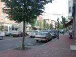
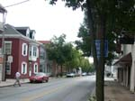
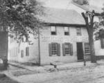
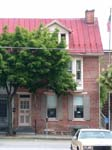

| page 3 of 8 |
| A Tour of Gettysburg with Gerald Bennett 7/30/2001 |
UCLA at Gettysburg Journal |
| page 3 of 8 |
|  |
||
| Home of Prof. Martin Stoever & J. L. Schick's store at the time of the battle. West side of Baltimore where it meets the square. | First block of Baltimore south of the square. Looking south. | Adams County Court House on the west side of Baltimore Street at Middle Street. |
|  |
 |
|
| East Middle Street looking east. Gen. Early bivouaced some of his troops along this street during the battle. | Fannie & David Buehler's was the center house of these three, east side of Baltimore across from the Court House. Fannie assisted with the wounded in the Court House. | The offices of the Gettysburg Compiler, the Democratic town newspaper. Whenever there was a Democratic victory, the cannon Penelope would be fired. When it blew up, it was buried in front of the office. |
|  |
||
| The Compiler office is long gone - but Penelope remains. | Penelope. | The William McClean house on East Middle Street. McClean was a prominent Republican attorney. |